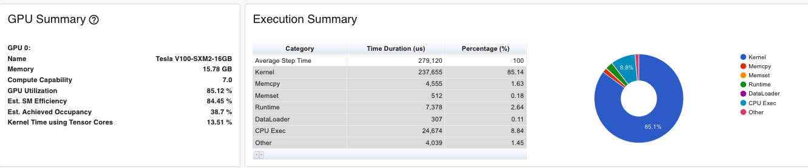

Dustin Wilson — February 8, 2022
I haven’t written a line of ML code since 2014 (and I could even argue that didn’t count). I wanted to develop a sense of what model training on modern GPUs is like, then, once I was ready with a model that worked on the GPU, migrate it to the HPU. If you’re just interested in comparative results, you can skip to performance results.
While I tested my model on a variety of instance types, I wanted to do an “official run” on a machine that might be seen as a reasonable comparison to the DL1. Using instances.vantage.sh, I aggregated data for GPU instances available in us-east-1 with between 2 and 8 GPUs. I relied exclusively on Nvidia’s most recent resnext-101 benchmarks as a proxy for my model’s performance. On price, p3.8xlarge instances are the most similar to the DL1 and offer 4 V100 GPUs, making them an obvious choice for comparative analysis.
| API Name | Memory (GiB) | VCPUs | GPUs | GPU Model | GPU Mem (GiB) | $/Hr |
|---|---|---|---|---|---|---|
| p2.xlarge | 61 | 4 | 1 | NVIDIA Tesla K80 | 12 | 0.90 |
| g3.8xlarge | 244 | 32 | 2 | NVIDIA Tesla M60 | 16 | 2.28 |
| p3.2xlarge | 61 | 8 | 1 | NVIDIA Tesla V100 | 16 | 3.06 |
| g4dn.12xlarge | 192 | 48 | 4 | NVIDIA T4 Tensor Core | 64 | 3.91 |
| g3.16xlarge | 488 | 64 | 4 | NVIDIA Tesla M60 | 32 | 4.56 |
| g5.12xlarge | 192 | 48 | 4 | NVIDIA A10G | 96 | 5.67 |
| p2.8xlarge | 488 | 32 | 8 | NVIDIA Tesla K80 | 96 | 7.20 |
| g4dn.metal | 384 | 96 | 8 | NVIDIA T4 Tensor Core | 128 | 7.82 |
| g5.24xlarge | 384 | 96 | 4 | NVIDIA A10G | 96 | 8.14 |
| p3.8xlarge | 244 | 32 | 4 | NVIDIA Tesla V100 | 64 | 12.24 |
| g5.48xlarge | 768 | 192 | 8 | NVIDIA A10G | 192 | 16.29 |
| p3.16xlarge | 488 | 64 | 8 | NVIDIA Tesla V100 | 128 | 24.48 |
| p3dn.24xlarge | 768 | 96 | 8 | NVIDIA Tesla V100 | 256 | 31.21 |
| p4d.24xlarge | 1152 | 96 | 8 | NVIDIA A100 | 320 | 32.77 |
I also ran short-lived tests on the p2.xlarge, p2.8xlarge and p3.2xlarge to help me develop a mental model of DDP patterns and performance. The benchmarks for these are all included in the following sections.
I didn’t intend on doing so many preliminary GPU runs, it just sort of happened. Towards the end of the project I realized I had benchmarks scattered across multiple instance types and parameter sets and decided to go back and fill out the testing matrix. This helped me validate that DDP was working as expected and contextualize the effect of larger parameter models, different batch sizes, etc.
| Model Parameter Set | Instance | Throughput (Imgs/Hr) | Rate ($) | Imgs/$ | Spot Rate ($) | Imgs/$ (Spot) |
|---|---|---|---|---|---|---|
| Default Parameters From DCGAN | ||||||
| Naive-64 | p2.xlarge | 798,400 | $0.90 | 887,125 | $0.27 | 2,957,092 |
| Naive-64 | p2.8xlarge | 7,780,000 | $7.20 | 1,080,556 | $2.16 | 3,601,852 |
| Naive-64 | p3.2xlarge | 5,830,000 | $3.06 | 1,905,229 | $0.92 | 6,336,957 |
| Naive-64 | p3.8xlarge | 9,863,000 | $12.24 | 805,800 | $3.67 | 2,686,002 |
| Prioritize Model Stability | ||||||
| Clamp-64 | p3.2xlarge | 1,225,000 | $3.06 | 400,326 | $0.92 | 1,331,521 |
| Clamp-64 | p3.8xlarge | 6,260,800 | $12.24 | 511,503 | $3.67 | 1,705,010 |
| Clamp-64 | dl1.24xlarge | $13.11 | $3.93 | |||
Rebalance for (3 x 128 x 128) Images |
||||||
| Safe-128 | p3.2xlarge | 1,462,900 | $3.06 | 478,057 | $0.92 | 1,593,526 |
| Safe-128 | p3.8xlarge | 5,941,000 | $12.24 | 485,375 | $3.67 | 1,617,919 |
| Safe-128 | dl1.24xlarge | $13.11 | $3.93 |
Tests were all conducted with batch_size at 256, for certain models and machines this is definitely a bottleneck, but at a minimum it provides a consistent baseline. Model parameters tested were one of three configurations, Naive-64, Clamps-64, or Safe-128. Naive-64 parameters were taken directly from the DCGAN paper and (partially) from PyTorch’s own documentation on generative models. Clamps-64 parameters were deliberately set to ensure the model didn’t collapse. This meant having millions more parameters in the generator than the model really should have given images of this size. The Safe-128 parameter set was designed to have approximately the same size as Clamps-64, favor the generator, and have roughly the same size/performance as Clamps-64, but on images 4x as large. Relevant parameters displayed below.
G Params |
D Params |
Relevant Params | |
|---|---|---|---|
| Naive-64 | 3,576,704 | 2,765,568 | {"nz": 100, "ngf": 64, "ndf": 64, "img_size": 64 } |
| Clamp-64 | 52,448,768 | 2,765,568 | {"nz": 256, "ngf": 256, "ndf": 64, "img_size": 64 } |
| Safe-128 | 48,772,864 | 2,796,928 | {"nz": 128, "ngf": 128, "ndf": 32, "img_size": 128 } |
| Figure 1.1 Simplified Model Training Architecture |
|
All infrastructure for this project is hosted on AWS. Please see infrastructure and hardware choices for more detail on the specific details of that element of the project. All training resources run in a single VPC with two subnets (1 public, 1 private) in the same availability zone. I deployed the following instances to the VPC’s private subnet and accessed them via SSH through a jump-instance deployed to the public subnet.
training-prod — An EC2 instance for running deep learning models, either DL1 or a cost-comparable GPU instance (P-type). In either case, the instance is running a variant of the AWS Deep Learning AMI. Of course, you can construct your own conda environment, container, or AMI for your specific needs.
training-nb — A small SageMaker instance used for interactive model development, model evaluation, and generating plots.
metrics — A small EC2 instance used to host metrics containers. Most charts in the infrastructure, performance, and profiling section come off of these applications. Specifically, this machine ran:
imgs-api — A small, CPU EC2 instance for hosting our model API. Runs a Flask app that serves images and gifs for the gallery.
Each of these instances has access to an AWS Elastic Filesystem (EFS) for saving model data (e.g. checkpoints, plots, traces, etc.). Using EFS saved me hours of data transfer in development and allowed me to pass model checkpoints between machines (i.e. between training-prod and training-nb). However, because EFS can be quite slow compared to EBS or local storage, the actual training data was saved to a gp3 volume attached to my training instances and then passed to the GPU/HPU during training.
I started with a PyTorch model running on a GPU (P3.2xlarge w. V100) before instrumenting it to run on the HPU. I wanted to make sure that I could do a fair comparison of the two, and that meant ensuring I was optimizing (within reason) for either platform. To validate that the model was sufficiently tuned for the GPU, I referred to the metrics generated by running my model in profiler mode, instance metrics sent to Grafana, and those produced by nvidia-smi (see: nvidia-smi). With these metrics available, I was able to make the following choices to improve the model’s training performance.
Upgrade EFS to EBS — Regrettably, an EFS file system can only drive up to 150 KiB/s per GiB of read throughput. This meant that model training start-up was very, very slow. To alleviate this issue, I attached a gp3 (8000 iops, 1000 MiB/s) volume to my training instance and used it to “host” the MSLS data. Anecdotally, this choice led to a 2000% speed up in time until first training iteration. Although EBS is more expensive, the decision paid for itself by saving hours of idle GPU/HPU time.
Increase Batch Size — This was low-hanging fruit. Independent of the other changes, the right choice of batch size (i.e. 1024 instead of 128) sped up overall execution time by ~80%.
Minimize (obvious) CUDA Copies — Training statistics, outputs, labels, etc. were being haphazardly moved to and from the GPU! I can collect and display them at the end of the epoch rather than on each batch.
Using AMP — Automatic Mixed Precision (AMP) allows for model training to run with FP16 values where possible and F32 where needed. This allows for lower memory consumption and faster training time. It also opens the door for me to use Habana’s mixed precision modules when I move over to the DL1 instance.
Distributed Data Processing — In isolation, distributed data processing doesn’t improve the model’s training performance, but it does lend towards a more robust training environment. Although this is a problem that uses a moderate amount of small images, I still wanted to instrument my code to run across multiple GPUs (and nodes).
With these changes made, I was hoping that I was in a good place. Looking at the first chart below, PyTorch Profiler - GPU Execution Summary, it would seem I was doing quite well, 85% is OK GPU performance! Unfortunately, the second graph reveals a fundamental problem in my profiling strategy at the time. The sections profiled didn’t include the dataloader steps!
| Figure 1.1 - PyTorch Profiler - GPU Execution Summary |
|  |
| Figure 1.2 - Grafana - GPU Utilization Rates |
 |
At this point things got quite difficult. I tried tweaking the number of dataloader workers and their pre-fetch factors, no luck. I tried generating an hd5 dataset from my images and writing my own dataloader, again, no luck. I even tried installing a SIMD fork of PIL to increase image processing performance. Unfortunately, none of it made a meaningful difference on the V100. I strongly suspected it was the dataloader code that was the bottleneck and did a few sanity checks to make sense of things.
Every batch is doing thousands of PIL.open() calls (source). If these calls are causing the slowdown, we should be able to construct an experiment to test it. I tried the following exercises to help me understand resource usage during the training process.
p2.8xlarge with older K80s to see if the weaker GPUs would produce nicer utilization metrics. In theory, if the GPU is the bottleneck instead of the dataloader, I won’t see these periodic dips. This is a bit of a vanity metric and I have no interest in doubling my training costs for vanity’s sake, but the charts below confirm my hypothesis. This was an excellent discovery!| Figure 2.1 - GPU Training - GPU Usage - P2.8xLarge |
 |
p3.2xlarge, I figured I should profile the disk to see what was going on during the utilization drops. I thought a maxed-out gp3 would have been adequate, but maybe I should have sprung for the io1 or io2. In Figure 2.2 - GPU Training - atop + Nvidia SMI Profile , you can see the results of atop and nvidia-smi during a training run. When the GPU is at low utilization. the disk where MSLS is mounted (/dev/xvdh) is working!.| Figure 2.2 - GPU Training - atop + Nvidia SMI Profile |
 |
| Figure 2.3 - GPU Training - Distributed Training on Larger Model |
 |
Thinking about it in retrospect, this all makes sense. We’re opening images that are (3 x 360 x 480) and the loader is doing some light calculations to resize and re-color them, but then the GPU is running the expensive operations on images that are just (3 x 64 x 64).
I later did some research into GPU profiling and learned that GPU utilization is a coarse metric and I was probably already in a OK place from a performance perspective given my Est. Achieved Occupancy was OK this entire time1. Regardless, very enjoyable set of experiments. Finally, I did a few short test-runs to collect metrics (p2.8xlarge w. 8 x K80, p3.2xlarge w. 1 x V100, p3.8xlarge w. 4 x V100) and I moved along to training on the Gaudi-accelerated instances. (See: Performance Results)
Migrating a model to run on HPUs require some changes, most of which are highlighted in the migration guide. In general, a few changed imports allow the PyTorch Habana bridge to drive the execution of deep learning models on the Habana Gaudi device. Specifically, I made the following changes for the Gaudi accelerated instances:
Use the custom Habana DataLoader — Under the right circumstances, HabanaDataLoader can yield better performance that the native DataLoader. Even without acceleration, HabanaDataLoader still will fall back to the standard loader.
Use Local NVME Storage Instead of EBS — I just noted that the dataloader was potentially a bottleneck in my training process. Instead of training of of EBS, when training the model on DL1, I trained off of the ephemeral storage volumes that come with the instance. Test results in Performance Results
Use Lazy Mode — Lazy Mode provides the SynapseAI graph compiler the opportunity to optimize the device execution for multiple ops.
Use FusedAdamW over AdamW — FusedAdamW is a custom AdamW implementation for Habana devices that can batch the element-wise updates applied to all the model’s parameters into one or a few kernel launches rather than a single kernel for each parameter. This should yield some nice performance improvements on the DL1 instances.
Use HMP — Habana HPUs can run operations in bfloat16 faster than float32. Therefore, these lower-precision dtypes should be used whenever possible on those devices. Just like AMP helps on GPU instances. I should use HMP where possible. See: HMP on Tensorflow.
Use HCCL over NCCL — Collective ops are implemented using the Habana Collective Communications Library (HCCL) and used to perform communication among different Gaudi cards (see Habana Collective Communications Library (HCCL) API Reference). HCCL is integrated with torch.distributed as a communication backend. This was a 1 LOC change from NCCL.
1 Estimated Achieved Occupancy (Est. Achieved Occupancy) is a layer deeper than Est. SM Efficiency and GPU Utilization for diagnosing performance issues. … As a rule of thumb, good throughput gains can be had by improving this metric to 15% and above. But at some point you will hit diminishing returns. If the value is already at 30% for example, further gains will be uncertain.